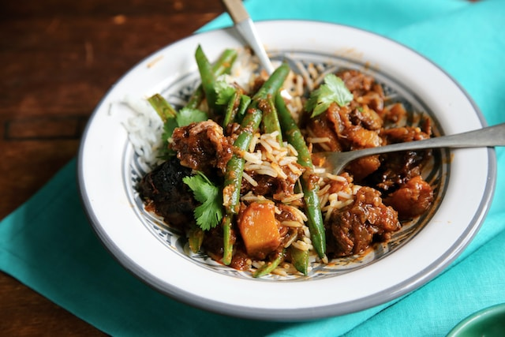

Rice and Beef Stew Recipe

Steps to follow to prepare a delicious bowl of rice and beef stew
If you're looking to dive into the kitchen, here is a dinner idea that will help you prepare something savoury that has a pleasant flavour
All you need is a list of fresh ingredients that you can grab at your nearest grocery store
Ingredients
- Half a cup of rice
- 250g of beef
- Two onions, chopped
- Three tomatoes, chopped
- Three moderately sized carrots, chopped
- One green capsicum, chopped
- 3 cloves of Garlic, minced
- 30g fresh Coriander leaves
- One glass of water
- Cooking oil
Instructions
Part 1: Cooking Rice
- Heat two glasses of
water inside a pot until it boils
- Add the rice into the boiling water
- Let it cook for 20 minutes at medium heat
- Switch off the stove and move onto cooking the meat
Part 2: Cooking Meat
- Pour three tablespoons of oil in a separate pot
- Heat the oil for 3 minutes
- Add two chopped onions. Stir and let them cook until they turn translucent
- Add the minced garlic into the pot and let it cook for 2 minutes
- Add the minced meat and stir. Let it cook for 3 minutes
- Add a glass of water into the mixture and mix. Let it cook for 10 minutes
- Add the chopped carrots and capsicum and let them cook for another 15 minutes
- Add your tomatoes and salt then stir the mixture. Let it cook for 5 minutes
- Pour the coriander and stir. Let it cook for one minute
- Serve the spaghetti with the minced meat stew
ENJOY!